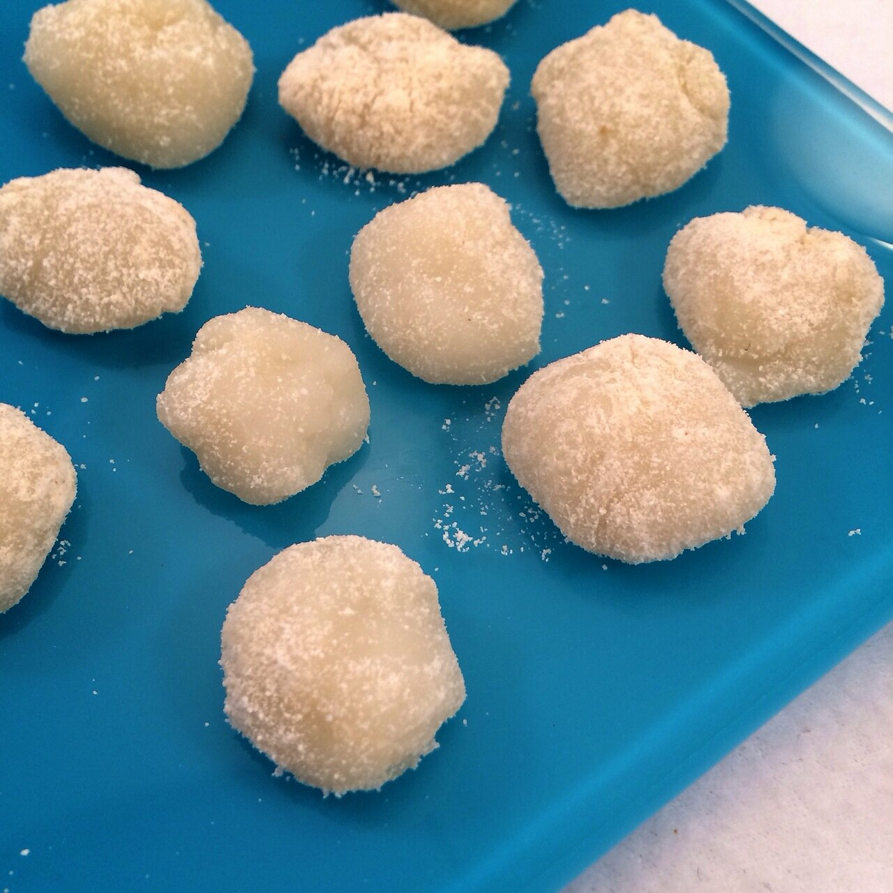

Sweet Mochi Balls
I recently bought glutinous rice flour on amazon because I really really wanted to make mochi. I had previously bought packaged brown rice mochi squares off of iherb, which come super hard and when you cook them, they fluff. This had me craving mochi balls, like the kind of fluffy gooey comforting balls you often find at froyo shops? That kind! Sooo long story short, I bought glutinous rice flour on amazon. And I'm soo glad I did because this is so easy and so yummy. Perfect to top my almost-nightly low cal almond milk ice cream. 
- 1/4 cup glutinous rice flour (30 g)
- 1/4 cup water
- 1/4 cup stevia
- 1 tsp coconut oil
- 1 tsp coconut flour (or flour of choice)
In a bowl, mix the rice flour, water, and stevia. It'll be soupy and not sweet at all... Microwave for 30 seconds; remove, and stir. Repeat this step for a total of 3-4 minutes. Eventually, a verrrrry thick, gooey, stringy mixture forms. Add the 1 tsp of coconut oil and evenly incorporate it with a spatula. It will take a lot of strength and patience to work it into the dough. Mostly strength XD. Once incorporated, let sit a bit to cool. Remove balls of the dough and roll in a flour of your choice; this way the dough isn't a gooey mess (the flour dries the outer layer). I used coconut flour because it's sweet, but any flour is fine.